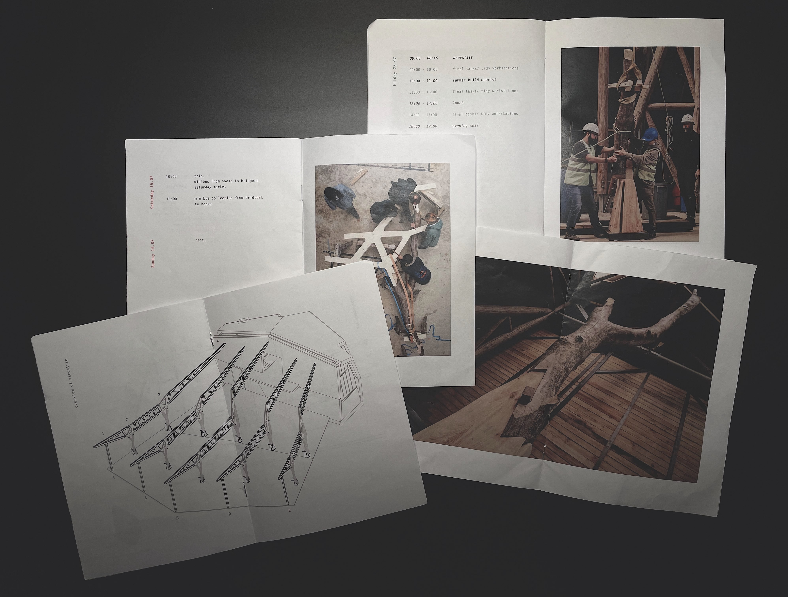
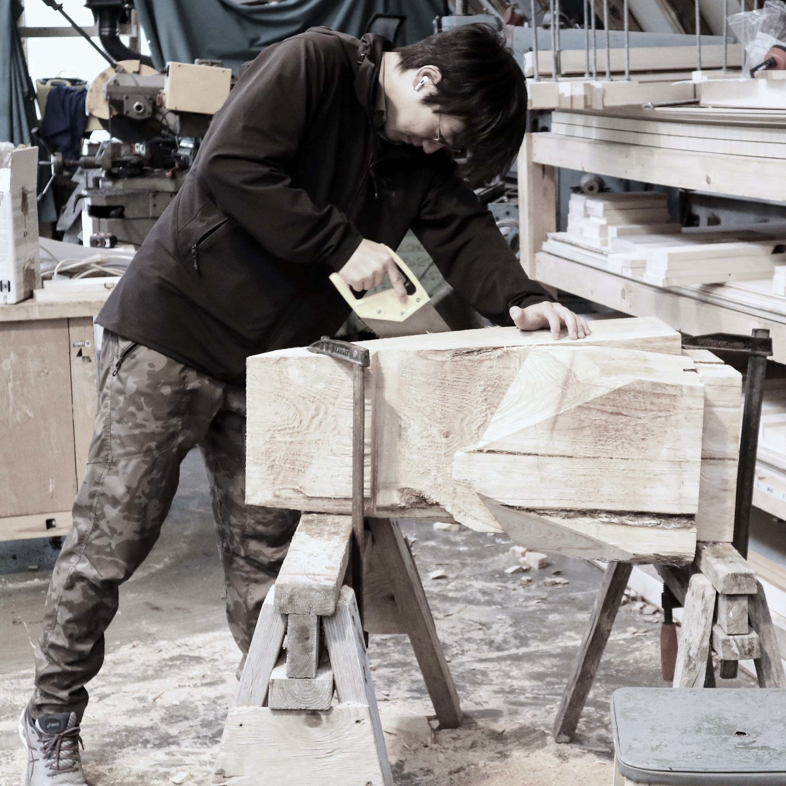
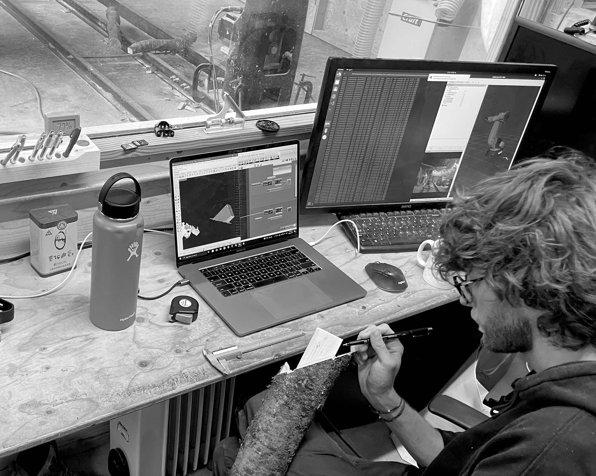
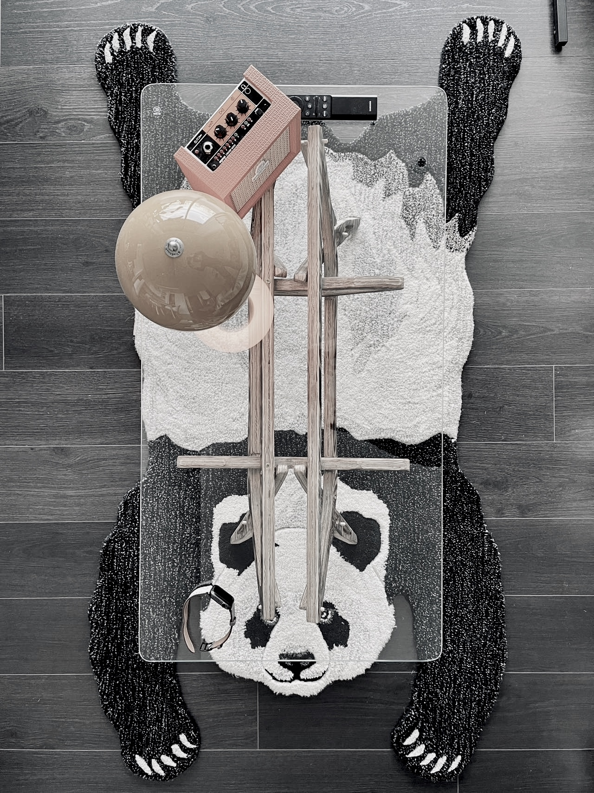
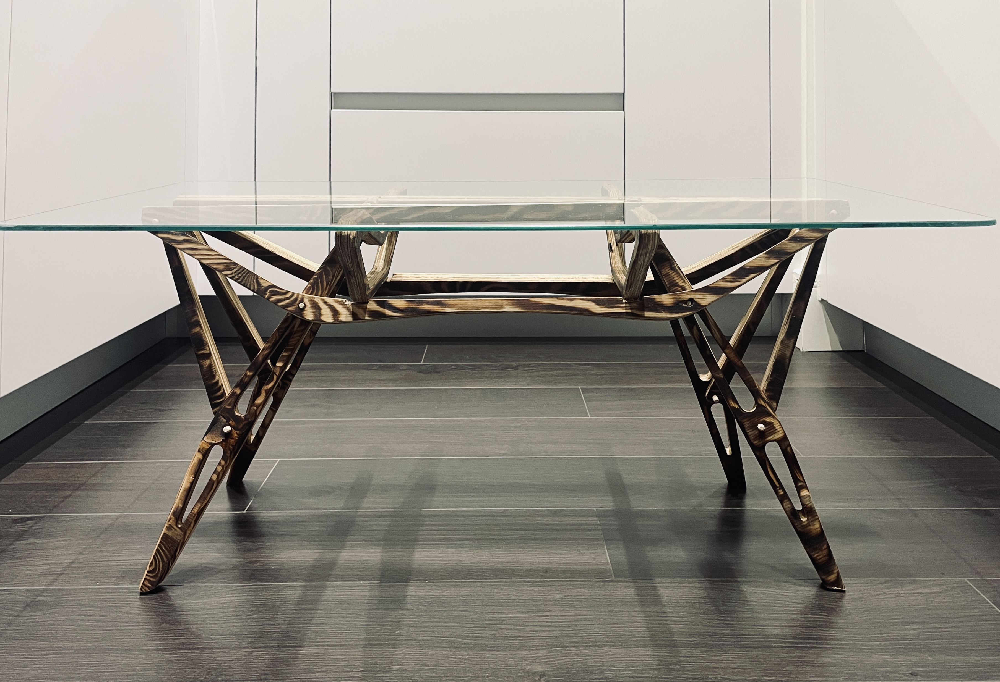
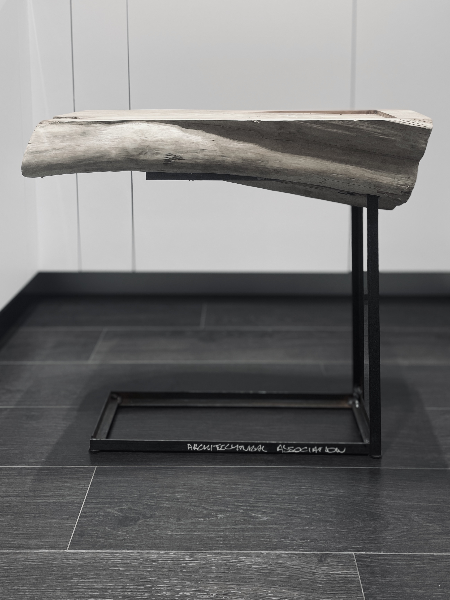

Truss & Tree Forks
Project Details
| Teams | Design & Make, Bowen Tan |
|---|---|
| Time Period | July 2023 - Aug. 2023 |
| Media Used | Onsite Fabrication |
Project Description
Hooke Park Build is an intensive short programme whose participants assist in the physical production of experimental architecture at the AA’s Hooke Park campus. Working on active projects, participants are exposed to many aspects of timber building – from forestry operations, to traditional building methods, to innovative robotic fabrication.

Schedules and itinerary

Cleaning the cedar stump after the robotic rough cut

Assist with tree felling

Setting, Checking the precision for robotic cutting

Robotic production - truss chords

By-product using cutting waste to make Carlo Mollino-style coffee table

Top view with the coffee table

Elevation

Tea tray - By-product using Ceder stump cutting waste